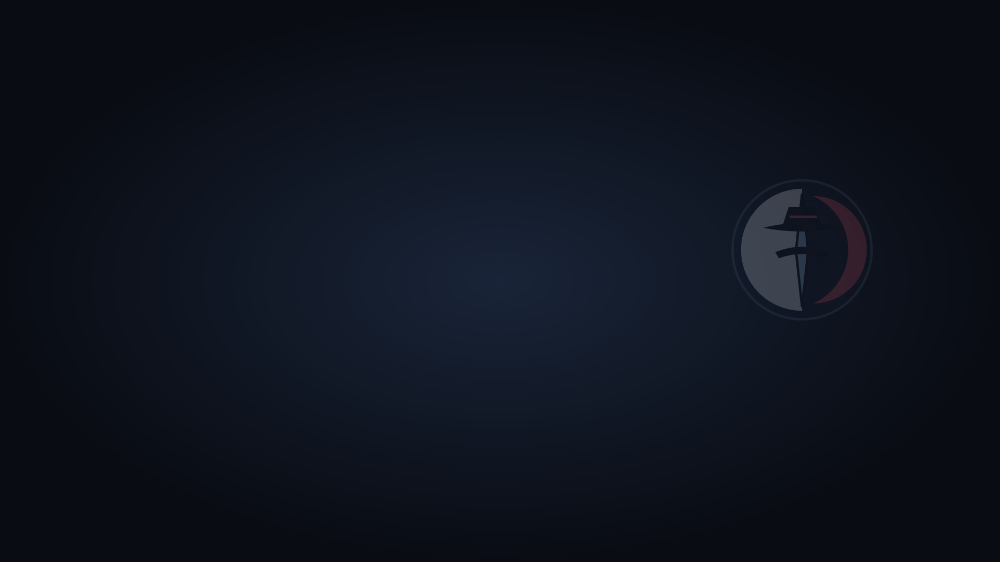
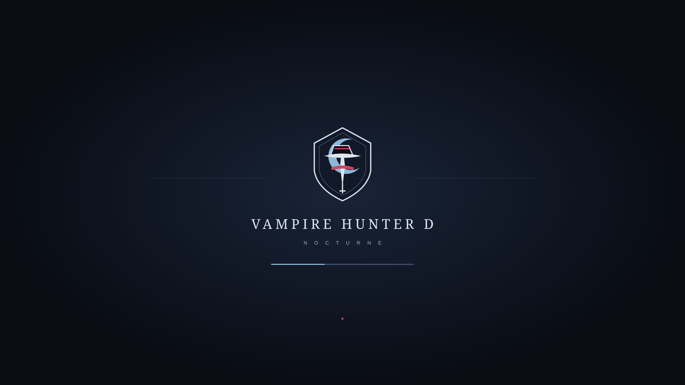
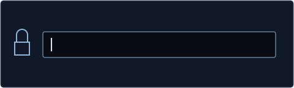
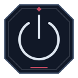
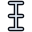
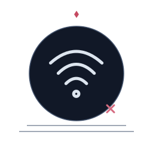
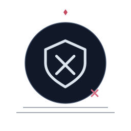
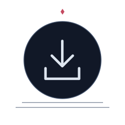
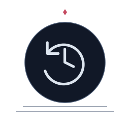

DhampirOS sigil
Primary system mark.

DHAMPIROS BY POTEMKIN · VISUAL DESIGN CATALOGUE
A hardened Kicksecure derivative dressed for the night.
Everything displayed below is taken from the supplied DhampirOS artwork packs. Concept assets are labelled as concepts; nothing is passed off as a runtime screenshot.
IDENTITY
Primary system mark.
Shield-form secondary mark.
Compact identity asset.
Login/account artwork.
#090C13#111827#192438#43536D#A7B4C9#DDE5EF#C54A61#8BB8DA#A79ACA#9BBFA8#CFB483#C9B78EBOOT + UNLOCK


UNLOCK
The supplied unlock-panel artwork keeps the authentication surface sparse and legible.
ICON THEME

PowerThese are actual examples from the supplied DhampirOS icon theme, which contains far more coverage than the eight shown here.
CURSORS

textThe full pack includes 24 named cursor roles, multiple sizes, aliases and animated wait/progress variants.
SESSION LANGUAGE
LOGIN IDENTITY
One of the supplied account/avatar treatments for the login surface.
INSTALLER
These stage glyphs are actual supplied installer assets. They describe presentation only; disk operations remain the distro build's responsibility.
SYSTEM STATES

No network
Permission denied
Update available
RecoveryPROJECT STATUS
The artwork is real. A complete Dhampir image has not yet been runtime-verified end to end.